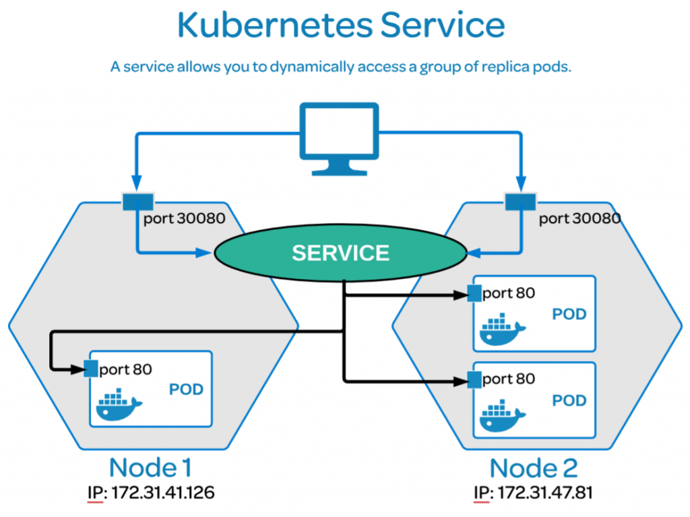

学习K8S的Service的时候有个概念经常让我混淆，就是service中的port, targetPort和nodePort. 为了加深对这3个port类型的理解，做了一些测试来进行强化。
在K8S中，应用会被封装在Container中暴露出来一个Port. 一个和多个Container组成了一个Pod。 Pod是K8S的基本执行单元。Pod会被分配到Node上运行。而多个Node组成了一个K8S Cluster.
从下图可以看到K8S的结构可以大致分为3层，Node, Pod, Container.

为了保护Container里面的应用，各层都进行了隔离。为了能够访问到Pod里面的Container, Kubernetes为Kubernetes Service定义了几种Port类型：
- Port - exposes the Kubernetes service on the specified port within the cluster. Other pods within the cluster can communicate with this server on the specified port.
- TargetPort - is the port on which the service will send requests to, that your pod will be listening on. Your application in the container will need to be listening on this port also.
- NodePort - exposes a service externally to the cluster by means of the target nodes IP address and the NodePort. NodePort is the default setting if the port field is not specified.
测试用的环境配置
这3个Port类型很容易让我混淆。为了搞明白他们的区别，我特意进行了一些测试。
- 创建Pod用来跑Nginx并且监听在80口上，用来看效果
- 创建Service，选择NodePort类型，分别对内暴露8080，对外暴露31199，并且引流到80口上。External -> 31199 -> Internal (8080) -> Container (80).
Pod
创建了一个测试用的Pod, 用来跑nginx，container的端口打开在80口。Pod内的其他Container可以通过80口访问这个nginx。不过我这个测试里面只有单个container, 所以不在考虑范围内。
1 | apiVersion: v1 |
Service
创建了一个service, 这个service通过selector来寻找相同label(run: nginx)的Pod.
type设定为NodePort, 这样就可以让外网访问了。
分别定义了：
- port: 8080 , Service暴露出来的Port
- nodePort: 31199, Node 暴露出来的Port
- targetPort: 80, Container上暴露的Port
1 | apiVersion: v1 |
运行结果
运行好以后检查service的状态。这个service获得了Cluster的IP，并且将Service的8080口映射到了Node的31199上
1 | sonic@k8smaster:~$ k get svc |
检查Pod的状态，这个Pod被运行在了第二个Node上k8snode2/10.190.155.40.
1 | sonic@k8smaster:~$ k get pod |
来吧，展示
测试用的Pod和Service都配置好了以后就准备开始测试了。
port: 8080
Service 暴露出来的是8080口，在Cluster任一Node可以用这个Port访问到Container里面的应用(nginx)。这里我在Master Node发起了请求，这个请求被转到了Node 2上跑的Pod, 然后被转了80口上。
targetPort: 80
targetPort: 80指的是Container上暴露出来的端口。这个端口是被Pod隔离的。我尝试在Cluster的一个Node上发起请求到80口上，一直显示尝试连接，说明无法访问。
nodePort: 31199
NodePort是Node上向外网暴露出来的端口。通过这个端口和Cluster的IP, 我可以通过外部的浏览器进行访问。
总结
- Port - 通过Service暴露出来的一个Port, 可以在Cluster内进行访问。
- TargetPort - Pod和Container监听的Port.
- NodePort - Cluster向外网暴露出来的端口，可以让外网能够访问到Pod/Container.
Sonic Guo